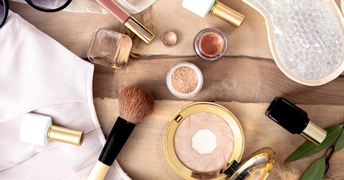

CONHEÇA AS MAQUIAGENS VEGANAS
O veganismo se estende a diversas áreas, inclusive ao uso de cosméticos.
Aqui vão algumas dicas para identificar produtos de origem animal na maquiagem, se atente a composição dos seguintes componentes:
- Carmim, cochonilha ou ácido carmínico:
- Cera de abelha, geleia real, mel, pólen ou própolis:
- Colágeno e elastina:
- Lanolina ou álcool de lanolina acetilado:
- Pó ou proteínas da seda:
- Ácido esteárico ou stearic acid:
- Ácido hialurônico:
É um pigmento vermelho de origem animal, extraído do cochonilha-do-carmim (Dactylopius coccus, parente do pulgão).
Também podem aparecer no rótulo em inglês (bee wax, royal gelly, honey, pollen). São ingredientes extraídos das abelhas e que são muito comuns em maquiagens naturais e orgânicas.
Ingredientes geralmente extraídos do couro bovino. Também pode aparecer no rótulo como gelatina.
Óleo natural produzido a partir da lã de ovelha.
Também pode aparecer no rótulo como silk. Trata-se de um ingrediente extraído dos casulos de bichos-da-seda.
Muito presente em máscaras de cílios, é um derivado de gordura animal bovina ou suína. No entanto, também possui uma versão vegetal, então atente-se aos selos no rótulo ao ver esse ingrediente.
Utilizado para preenchimento de rugas na dermatologia, mas aparece cada vez mais em cosméticos. Pode ser tanto de origem animal como de origem bacteriana. Certifique-se da origem do ingrediente antes de comprar o produto, para ter certeza de que a maquiagem é vegana.
Esses são apenas alguns dos ingredientes de origem animal utilizados na composição de maquiagens. É importante lembrar que todos eles possuem ótimos substitutos de origem vegetal ou sintética.
Existem diversas marcas nacionais, acessíveis e veganas, ou com certos produtos livres de crueldade animal. Aqui vão algumas dicas:
- Daiulus
- Amo Karité
- Vizella
- Face it
- Vult
A Dailus é uma empresa cruelty-free, tem o certificado do PETA e possui uma linha repleta de produtos veganos, incluindo inúmeras cores de esmaltes.
A make vegana da Amo Karité é produzida num processo 100% artesanal. Todas as matérias-primas são selecionadas com o objetivo de fazer bem para a pele, trazendo benefícios além de pigmentar. Ao todo, a linha conta com 7 tonalidades de bases e quase 30 tonalidades de multifuncionais sólidos e com lançamentos incríveis.
Com uma linha completa de maquiagem para pele, olhos, lábios e sobrancelha, a Vizella é uma marca de maquiagem vegana 100% brasileira. Assim, a marca cria produtos de qualidade, preço justo e que atende a todos os gostos, respeitando a individualidade de cada beleza. O destaque da marca está nas bases e corretivos, que possuem alta cobertura, além de grande variedade de tons. São 18 tons de base e 12 de corretivo disponíveis.
A marca é completamente vegana e seu grande destaque são os batons. Todos são muito bem avaliados e a marca até ganhou um prêmio de melhor batom no ano de 2019. Além de vegana, possui o selo EURECICLO, que significa que a marca compensa o impacto ambiental produzido pelas embalagens que produz.
É uma marca nacional que faz parte do grupo O Boticário. Embora não seja 100% vegana, pois alguns produtos têm ingredientes de origem animal, é cruelty free e possui várias maquiagens aptas para veganas. Fique de olho no rótulo.